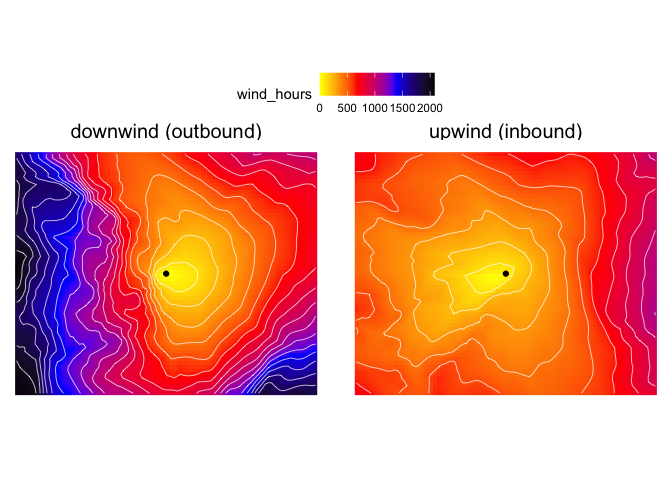

The windscape R package models landscape connectivity by wind dispersal. While prior wind connectivity models like the rWind package support connectivity modeling based on a snapshot of wind conditions, windscape is designed to model integrate over short-term or long-term time series of wind conditions across a landscape, estimating windborne diffusion across scales ranging from days to millennia. These models estimate directional wind travel times between any pair of sites, and can therefore be used to generate upwind immigration and downwind emigration accessibility surfaces for a focal site such as in the example below.
This is an early version of the package, and is under ongoing development. The core functionality is stable, but documentation is incomplete, additional features are planned, and future API changes are possible.

Use
The core workflow currently supported by the package begins with a raster stack representing a time series of windfields, summarizes this into a set of time-integrated wind conductance values between every grid cell and its eight neighbors, and then converts this into an asymmetric transition object (defined in the gdistance package) representing either upwind or downwind connectivity.
The example code below shows a workflow that models and visualizes upwind and downwind accessibility for a focal site in North America, based on wind data for a few days in the year 2000. The second example demonstrates how to calculate pairwise wind flows among a set of sites, and run Mantel tests of the relationships between wind flow and ecological data.
A more detailed set of vignettes is in development.
library(windscape)
library(tidyverse)
# Download some hourly wind data from the Climate Forecast System Reanalysis.
# We'll grab data for a chunk of North America for 40 days distributed across a single year,
# though a proper study would want to use a denser sampling of data
wind <- cfsr_dl(years = 2000, months = 6:9, days = seq(1, 28, 3),
xlim = c(-120, -90) + 360, # shift longitudes to be in [0, 360] range for CFSR
ylim = c(30, 50)) %>%
shift(dx = -360) # shift longitude back to the standard [-180, 180] range
# convert to a wind_field object
field <- wind_field(wind, order = "uuvv")
# summarize into a "wind rose" object (n = 8 directional layers)
rose <- wind_rose(field, p = 1)
# convert raster data into upwind and downwind connectivity graphs
downwind <- wind_graph(rose, "downwind")
upwind <- wind_graph(rose, "upwind")
# generate upwind and downwind dispersal surfaces for one focal site
site <- matrix(c(-105, 40), ncol = 2)
downwind_hrs <- gdistance::accCost(downwind, site)
upwind_hrs <- gdistance::accCost(upwind, site)
# restructure data and plot
d <- stack(downwind_hrs, upwind_hrs) %>%
rasterToPoints() %>%
as.data.frame() %>%
gather(direction, wind_hours, layer.1, layer.2) %>%
mutate(direction = recode(direction,
layer.1 = "downwind (outbound)",
layer.2 = "upwind (inbound)"))
ggplot(d) +
facet_wrap(~direction) +
geom_raster(aes(x, y, fill = wind_hours)) +
geom_contour(aes(x, y, z = wind_hours), bins = 20, color = "white", linewidth = .25) +
geom_point(data = as.data.frame(site), aes(V1, V2)) +
coord_fixed(ratio = 1.2) +
scale_fill_gradientn(colors=c("yellow", "red", "blue", "black")) +
theme_void() +
theme(legend.position="top",
strip.text=element_text(size=15))
In the above example, we used the wind connectivity model to estimate wind flows between one site and all other locations across the region. A alternative use case is to instead estimate pairwise wind connecitivity among a set of sites (e.g. the locations of populations where landscape genetic data were sampled). The example below shows how to do this using our downwind connectivity model and a set of site coordinates. It also demonstrates how to run statistical hypothesis tests of how wind flow, wind speed, and wind asymmetry relate to a hypothetical genetic data set (see here for details on these hypotheses). Because the genetic data are generated randomly in this example, the results are not significant.
# lon-lat coordinates for a set of focal sites
sites <- cbind(x = runif(20, -115, -95),
y = runif(20, 33, 47))
# pairwise wind flows among sites (notice that this is an asymmetric matrix)
wind_flow <- gdistance::costDistance(downwind, sites)
# pairwise geographic distance between sites (symmetric, converted to km),
# for use as a control variable in the partial Mantel tests
distance <- geosphere::distm(sites) / 1000
# test correlation between wind flow and gene flow, controlling for distance
gene_flow <- matrix(runif(400), 20) # simulate random gene flow data
r <- mantel_test(wind_flow, gene_flow, z = list(distance))
# test correlation between bidirectional wind connectivity and genetic isolation,
# controlling for distance
gene_dist <- matrix(runif(400), 20) # simulate random genetic differentiation data
wind_conn <- pairwise_means(wind_flow) # convert to symmetric matrix
r <- mantel_test(wind_conn, gene_dist, z = list(distance))
# test correlation between wind asymmetry and gene flow asymmetry
# (no distance control is needed for a test of reciprocally symmetric matrices)
wind_asym <- pairwise_ratios(wind_flow) # convert to asymmetry matrix
gene_asym <- pairwise_ratios(gene_flow) # convert to asymmetry matrix
r <- mantel_test(wind_asym, gene_asym)
# test correlation between wind asymmetry and genetic diversity asymmetry
diversity <- runif(20) # simulated diversity for each population
div_asym <- pairwise_ratios(diversity) # pairwise diversity ratios
r <- mantel_test(wind_asym, div_asym)Web tool
This R package powers the WINDSCAPE WEB APP (still under development and in beta) that models and visualizes the wind dispersal landscape for any location on earth. You just click the map to select a site, choose between “inbound” (upwind) or “outbound” (downwind) dispersal, and the app generates a global map of relative accessibility by wind. The app utilizes decades of hourly wind data from the Climate Forecast System Renanalysis to estimate long-term average wind travel times between locations.
Publications
Publications that have used the windscape framework include:
- Kling, M., and D. Ackerly. (2021) Global wind patterns shape genetic differentiation, asymmetric gene flow, and genetic diversity in trees. Proceedings of the National Academy of Sciences, 118(17) [https://doi.org/10.1073/pnas.2017317118]
- Kling, M., and D. Ackerly. (2020) Global wind patterns and the vulnerability of wind-dispersed species to climate change. Nature Climate Change, 10: 868-875 [https://doi.org/10.1038/s41558-020-0848-3]